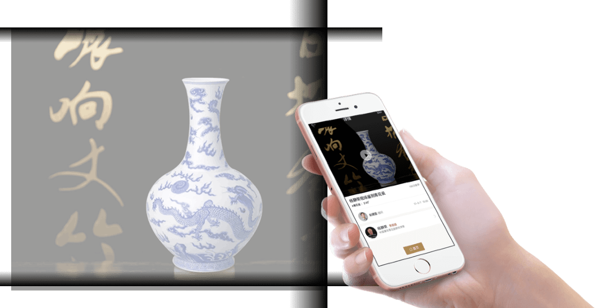

专家鉴宝
开启你的收藏创富之路

扫描二维码，关注公众号

开启你的收藏创富之路
扫描二维码，关注公众号


公司专注于“互联网+文物艺术品“方向，用互联网思维和工具优化传统文物艺术品行业的效率，从而推动文物艺术品行业的发展及优秀文物艺术品文化的传播。
袋熊收藏在线鉴宝，是一款基于微信的产品，操作简单方便，遇到自己看不懂的藏品，可以随时向老师发起鉴宝提问，老师会及时给您解答；在自己不断实践的同时，你还可以偷听、偷看别的藏友的鉴宝记录，都是非常鲜活的实战案例。有专家老师带领必定能事半功倍，与国内顶尖鉴定大师一起同行，定会让你的收藏之路变的更加顺畅。
进入袋熊收藏专家鉴宝栏目，选择求鉴宝；选取您要鉴定的宝贝类别，在对应的类别内选择一位专家，进入专家详情页后，在页面右下角选择在线提问。
上传藏品照片和问题，留下您的联系方式，选择提问的类型：公开提问／私密提问，选择公开提问，您的提问其他网友可以偷听，每次偷听都会给您进行利润分成，这部分钱会存入您的袋熊账户内。可以提现，也可以用于偷听其他网友的提问。选择私密提问，你的问题将不会显示在问题列表内，其他人无法看到也不能偷听老师的回答。
点击提交向老师提问，按照提示微信支付对应的鉴宝费用，等待老师解答，如果老师超过48小时未回答提问，系统会自动退还您的提问费。

书画
陶瓷
文玩杂项
佛教艺术
玉器珠宝
邮品钱币
青铜器
古典家具

故宫博物院研究员、权威瓷器鉴定专家。中央电视台《鉴宝》栏目特邀专家，1948年生于北京，毕业于复旦大学历史系，早年在邯郸陶瓷研究所从事传统颜色釉研究与烧造工作，1979年调入故宫博物院研究陶瓷史至今，在故宫研究陶瓷四十余年，现活跃于央视各大收藏类节目，是中央电视台“鉴宝”、“一槌定音”主打的鉴定专家，以学识渊博、见识过人、敢说真话著称，是最受藏家信任与欢迎的瓷器鉴定专家。

中国收藏家协会学术研究部主任 、美国大都会博物馆访问学者。权威玉器鉴定专家、1986年毕业于北京大学考古系，获历史学学士学位。1989年毕业于中国社会科学院研究生院考古系，获历史学硕士学位。曾工作于中国社会科学院考古研究所，及美国纽约大都会艺术博物馆亚洲艺术部，主要从事中国古代玉器考古研究及鉴定工作。现为科学出版社文物考古分设副社长，文化部艺术品评估委员会委员，中国文物学会玉器研究委员会副秘书长。国内与国际视野兼具的古方老师，编写玉器相关著作13部，是玉器鉴藏及教育领域不容置疑的领军人物。

杨静荣现场为您揭秘瓷器
书画落款的讲究

如何识别玉料
金鑫为你解读范曾代表作

跟玉器专家古方学玉器鉴定
扫描二维码，关注公众号